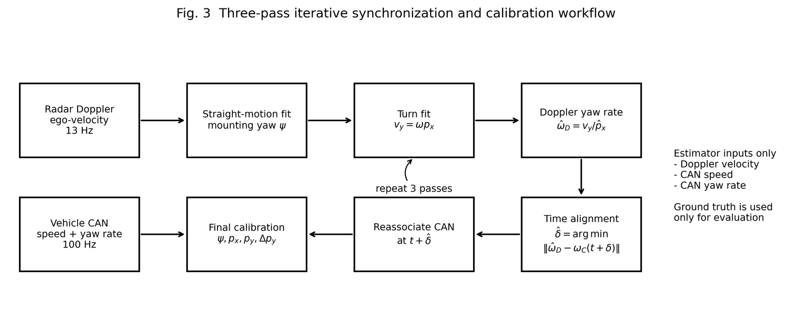
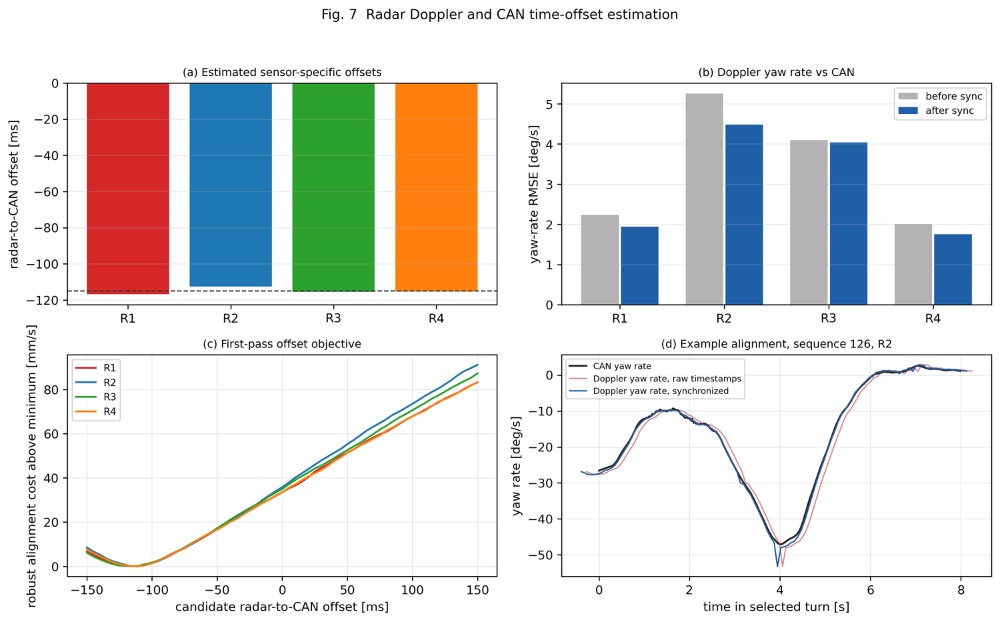

B1 · Time alignment and windows
Lateral offset is the one component that two sensors must observe together. B1 builds that shared observation: it estimates the clock shift between the sensors, pairs their turns, and cuts an exact common window so that only two boundaries remain exposed to timing error.
1 Why this stage exists
Stage 1 needed no other sensor. Lateral offset does: a single sensor cannot separate its own lateral offset from the platform's forward speed, because both appear in the same scalar. Two sensors observing the same turn can, by differencing. That requires them to agree on which turn, and on when it started and ended.
Every remaining timing dependence in NH-Calib is concentrated here. If B1 does its job, timing error touches the estimate only through two window boundaries rather than through every sample.
2 Clock-offset estimation
Sensor clocks in a recorded platform are rarely aligned to better than tens of milliseconds. The yaw-rate waveform, however, is the same physical signal seen by every sensor, which makes it the natural alignment reference: it is modality-independent and does not require any overlapping field of view.


3 Segment association
Association answers a simple question: which turn in sensor i is the same physical turn as which turn in sensor j? It is deliberately conservative — a wrong pairing is far more damaging than a missing one.
Candidate filter
Two segments may be paired only if they have the same turn direction and their time intervals actually overlap after offset correction. Opposite-sign candidates are never paired.
Greedy one-to-one matching
Candidates are sorted by overlap duration, longest first, and matched greedily. Each segment is used at most once, so a long turn in one sensor cannot absorb several turns in the other.
Reject the unmatched
Segments with no partner are dropped for this pair. They may still be used by another sensor pair, and they remain valid inputs to Stage 1, which is per-sensor.
4 Common windows and boundary interpolation
Two associated segments rarely start and end at the same instant. Integrating over different intervals would compare different motions, so the integration window is defined as their intersection.
These boundaries generally fall between samples. Each sensor's motion is therefore linearly interpolated at both ends, so that both integrals genuinely begin and end at the same instants rather than at the nearest available samples.
5 Segment quality verdict
Association guarantees that two segments overlap in time, not that they describe the same motion well. Inside the common window each sensor's yaw-rate waveform is compared against the median waveform of the participating sensors.
| Statistic | What it catches | Why this form |
|---|---|---|
| Uncentred cosine similarity | A sensor whose waveform has the wrong shape or the wrong sign | Mean removal would delete the sign information itself on drives dominated by one turn direction, so the similarity is deliberately uncentred. |
| Normalized RMSE | A sensor whose waveform has the right shape but the wrong magnitude | Cosine similarity is scale-invariant; NRMSE supplies the missing scale check. |
See also
- A1 · Turn-segment extraction — produces the segments being associated
- B2 · Sum-form relative Y — consumes the common windows
- Observability decomposition — why exactly one component depends on this stage